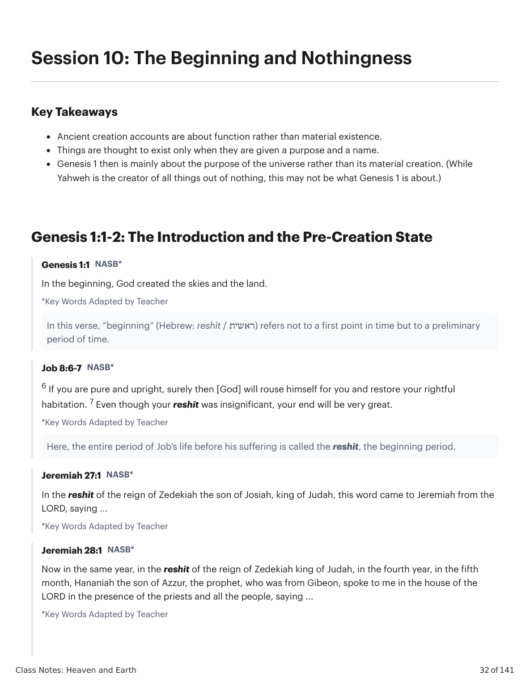
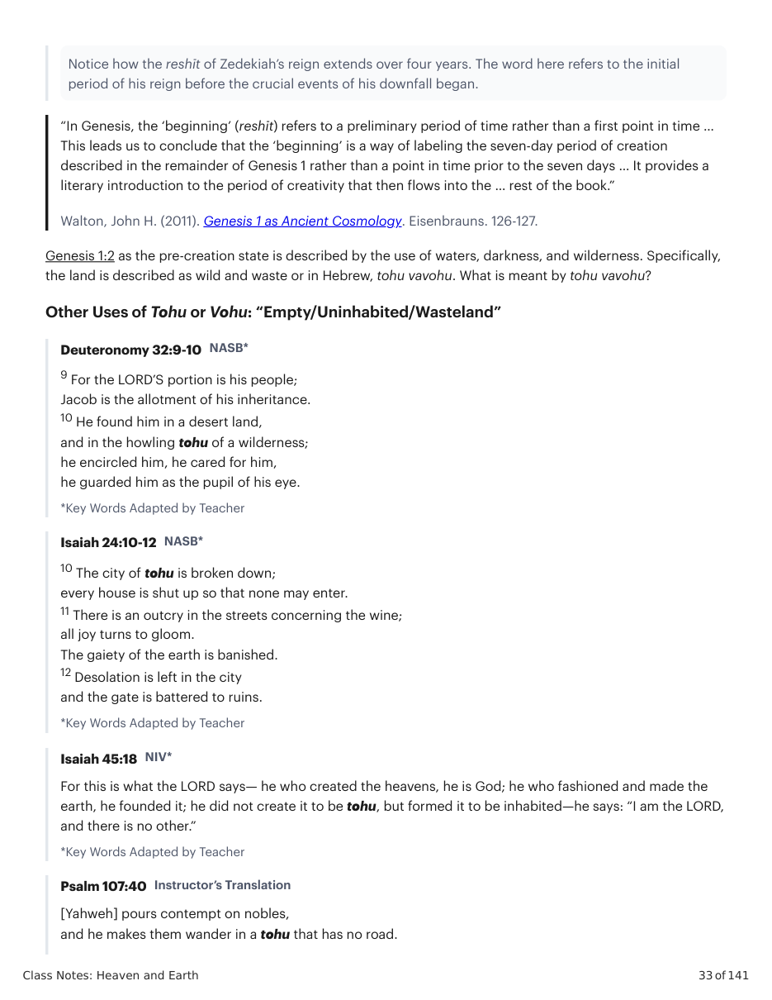
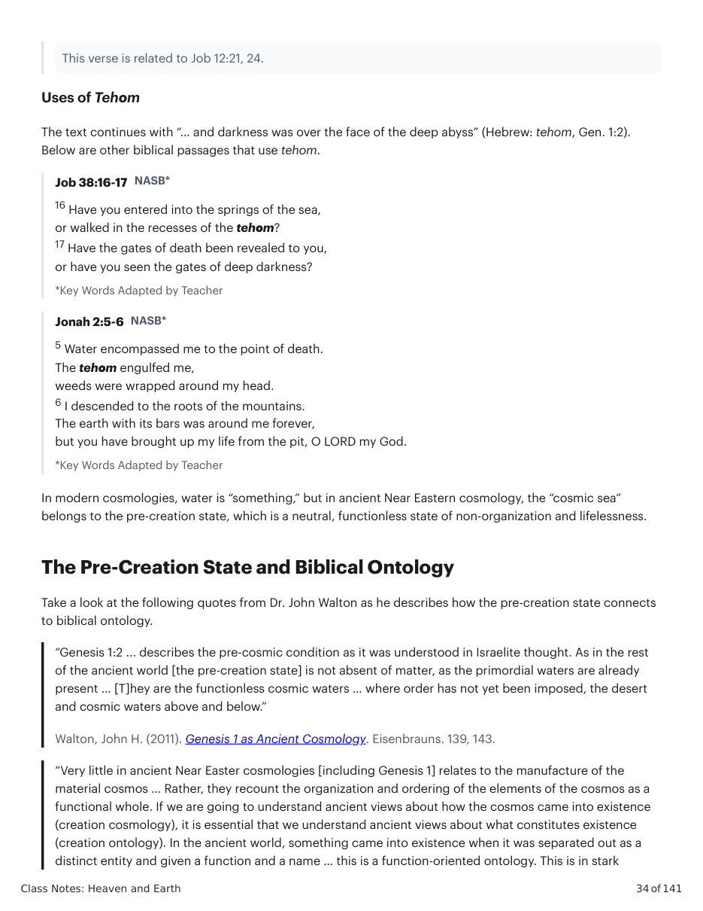
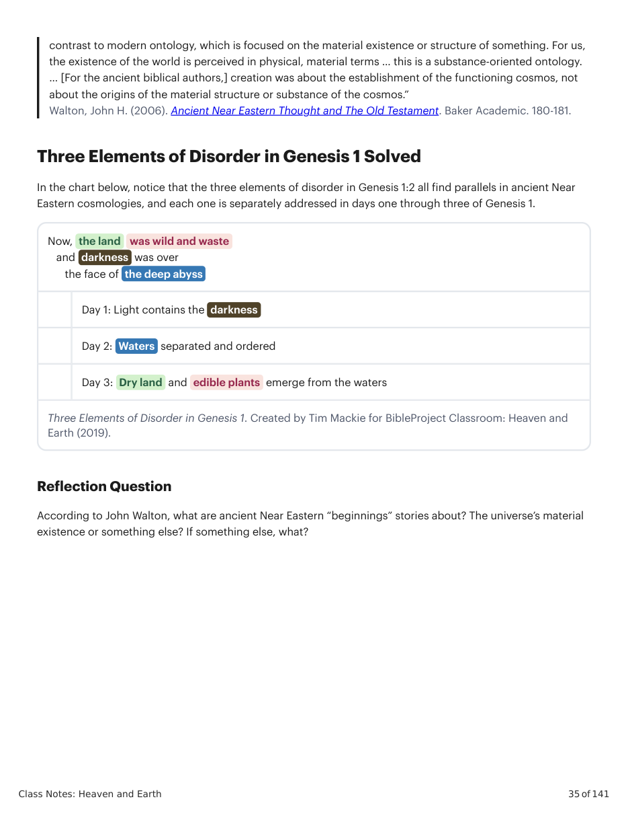

Walton, John H. (2011). Genesis 1 as Ancient Cosmology. Eisenbrauns. 126-127.
Genesis 1:2 as the pre-creation state is described by the use of waters, darkness, and wilderness. Specifically, the land is described as wild and waste or in Hebrew, tohu vavohu. What is meant by tohu vavohu? Other Uses of Tohu or Vohu: “Empty/Uninhabited/Wasteland” Deuteronomy 32:9-10 NASB* 9 For the LORD’S portion is his people; Jacob is the allotment of his inheritance. 10 He found him in a desert land, and in the howling tohu of a wilderness; he encircled him, he cared for him, he guarded him as the pupil of his eye. *Key Words Adapted by Teacher Isaiah 24:10-12 NASB* 10 The city of tohu is broken down; every house is shut up so that none may enter. 11 There is an outcry in the streets concerning the wine; all joy turns to gloom. The gaiety of the earth is banished. 12 Desolation is left in the city and the gate is battered to ruins. *Key Words Adapted by Teacher Isaiah 45:18 NIV* For this is what the LORD says— he who created the heavens, he is God; he who fashioned and made the earth, he founded it; he did not create it to be tohu, but formed it to be inhabited—he says: “I am the LORD, and there is no other.” *Key Words Adapted by Teacher Psalm 107:40 Instructor’s Translation [Yahweh] pours contempt on nobles, and he makes them wander in a tohu that has no road. This verse is related to Job 12:21, 24. Uses of Tehom The text continues with “… and darkness was over the face of the deep abyss” (Hebrew: tehom, Gen. 1:2). Below are other biblical passages that use tehom. Job 38:16-17 NASB* 16 Have you entered into the springs of the sea, or walked in the recesses of the tehom? 17 Have the gates of death been revealed to you, or have you seen the gates of deep darkness? *Key Words Adapted by Teacher Jonah 2:5-6 NASB* 5 Water encompassed me to the point of death. The tehom engulfed me, weeds were wrapped around my head. 6 I descended to the roots of the mountains. The earth with its bars was around me forever, but you have brought up my life from the pit, O LORD my God. *Key Words Adapted by Teacher In modern cosmologies, water is “something,” but in ancient Near Eastern cosmology, the “cosmic sea” belongs to the pre-creation state, which is a neutral, functionless state of non-organization and lifelessness. The Pre-Creation State and Biblical Ontology Take a look at the following quotes from Dr. John Walton as he describes how the pre-creation state connects to biblical ontology. “Genesis 1:2 ... describes the pre-cosmic condition as it was understood in Israelite thought. As in the rest of the ancient world [the pre-creation state] is not absent of matter, as the primordial waters are already present … [T]hey are the functionless cosmic waters … where order has not yet been imposed, the desert and cosmic waters above and below.”
Walton, John H. (2011). Genesis 1 as Ancient Cosmology. Eisenbrauns. 139, 143.
“Very little in ancient Near Easter cosmologies [including Genesis 1] relates to the manufacture of the material cosmos … Rather, they recount the organization and ordering of the elements of the cosmos as a functional whole. If we are going to understand ancient views about how the cosmos came into existence (creation cosmology), it is essential that we understand ancient views about what constitutes existence (creation ontology). In the ancient world, something came into existence when it was separated out as a distinct entity and given a function and a name … this is a function-oriented ontology. This is in stark contrast to modern ontology, which is focused on the material existence or structure of something. For us, the existence of the world is perceived in physical, material terms … this is a substance-oriented ontology. … [For the ancient biblical authors,] creation was about the establishment of the functioning cosmos, not about the origins of the material structure or substance of the cosmos.”
Walton, John H. (2006). Ancient Near Eastern Thought and The Old Testament. Baker Academic. 180-181.
Earth (2019).
According to John Walton, what are ancient Near Eastern “beginnings” stories about? The universe’s material existence or something else? If something else, what?



